2024 Higher Biology - Paper 2 marking instructions
Source: Scottish Qualifications Authority (SQA) / Qualifications Scotland. This is a StemInteract HTML companion, not an official HTML edition. Selectable text is supplied alongside original page images. Use the images or original PDF for equations, powers, fractions, vector notation, tables and diagrams; text extraction cannot fully preserve mathematical layout.
Jump to a question
PDF page 1
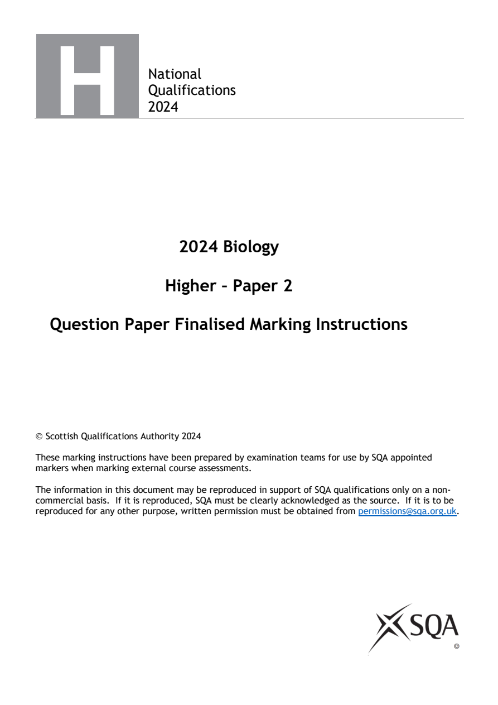
Selectable page text
National
Qualifications
2024
2024 Biology
Higher – Paper 2
Question Paper Finalised Marking Instructions
© Scottish Qualifications Authority 2024
These marking instructions have been prepared by examination teams for use by SQA appointed
markers when marking external course assessments.
The information in this document may be reproduced in support of SQA qualifications only on a non-
commercial basis. If it is reproduced, SQA must be clearly acknowledged as the source. If it is to be
reproduced for any other purpose, written permission must be obtained from permissions@sqa.org.uk.
©PDF page 2
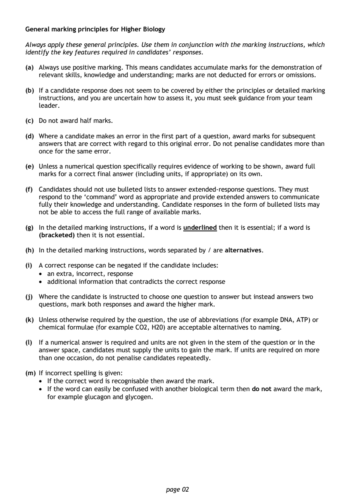
Selectable page text
General marking principles for Higher Biology
Always apply these general principles. Use them in conjunction with the marking instructions, which
identify the key features required in candidates’ responses.
(a) Always use positive marking. This means candidates accumulate marks for the demonstration of
relevant skills, knowledge and understanding; marks are not deducted for errors or omissions.
(b) If a candidate response does not seem to be covered by either the principles or detailed marking
instructions, and you are uncertain how to assess it, you must seek guidance from your team
leader.
(c) Do not award half marks.
(d) Where a candidate makes an error in the first part of a question, award marks for subsequent
answers that are correct with regard to this original error. Do not penalise candidates more than
once for the same error.
(e) Unless a numerical question specifically requires evidence of working to be shown, award full
marks for a correct final answer (including units, if appropriate) on its own.
(f) Candidates should not use bulleted lists to answer extended-response questions. They must
respond to the ‘command’ word as appropriate and provide extended answers to communicate
fully their knowledge and understanding. Candidate responses in the form of bulleted lists may
not be able to access the full range of available marks.
(g) In the detailed marking instructions, if a word is underlined then it is essential; if a word is
(bracketed) then it is not essential.
(h) In the detailed marking instructions, words separated by / are alternatives.
(i) A correct response can be negated if the candidate includes:
• an extra, incorrect, response
• additional information that contradicts the correct response
(j) Where the candidate is instructed to choose one question to answer but instead answers two
questions, mark both responses and award the higher mark.
(k) Unless otherwise required by the question, the use of abbreviations (for example DNA, ATP) or
chemical formulae (for example CO2, H20) are acceptable alternatives to naming.
(l) If a numerical answer is required and units are not given in the stem of the question or in the
answer space, candidates must supply the units to gain the mark. If units are required on more
than one occasion, do not penalise candidates repeatedly.
(m) If incorrect spelling is given:
• If the correct word is recognisable then award the mark.
• If the word can easily be confused with another biological term then do not award the mark,
for example glucagon and glycogen.
page 02PDF page 3

Selectable page text
(n) Presentation of data:
• If a candidate provides two graphs, in response to one question, mark both and award the
higher mark.
• If a question asks for a particular type of graph/chart and the candidate gives the wrong type,
do not award full marks. Candidates cannot achieve the plot mark but may be able to achieve
the mark for scale and label. If the x and y data are transposed, then do not award the scale
and label mark.
• If the graph uses less than 50% of the axes then do not award the scale and label mark.
• If 0 is plotted when no data for this is given, then do not award the plot mark — candidates
should only plot the data given.
(o) Only award marks for a valid response to the question asked. For example, in response to
questions that ask candidates to:
• identify, name, give or state, they need only answer or present in brief form
• describe, they must provide a statement as opposed to simply one word
• explain, justify, they must provide a reason for the information given
• compare, they must demonstrate knowledge and understanding of the similarities and/or
differences between topics being examined
• calculate, they must determine a number from given facts, figures or information
• predict, they must indicate what may happen based on available information
• suggest, they must apply their knowledge and understanding to a new situation
page 03PDF page 4
Paper 2, Question 1Paper 2, Question 2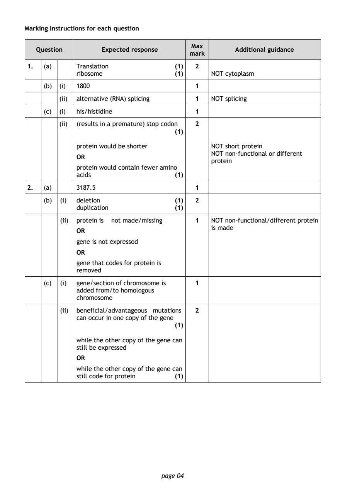
Selectable page text
Marking Instructions for each question
Max
Question Expected response Additional guidance
mark
1. (a) Translation (1) 2
ribosome (1) NOT cytoplasm
(b) (i) 1800 1
(ii) alternative (RNA) splicing 1 NOT splicing
(c) (i) his/histidine 1
(ii) (results in a premature) stop codon 2
(1)
protein would be shorter NOT short protein
NOT non-functional or different
OR
protein
protein would contain fewer amino
acids (1)
2. (a) 3187.5 1
(b) (i) deletion (1) 2
duplication (1)
(ii) protein is not made/missing 1 NOT non-functional/different protein
is made
OR
gene is not expressed
OR
gene that codes for protein is
removed
(c) (i) gene/section of chromosome is 1
added from/to homologous
chromosome
(ii) beneficial/advantageous mutations 2
can occur in one copy of the gene
(1)
while the other copy of the gene can
still be expressed
OR
while the other copy of the gene can
still code for protein (1)
page 04PDF page 5
Paper 2, Question 3Paper 2, Question 4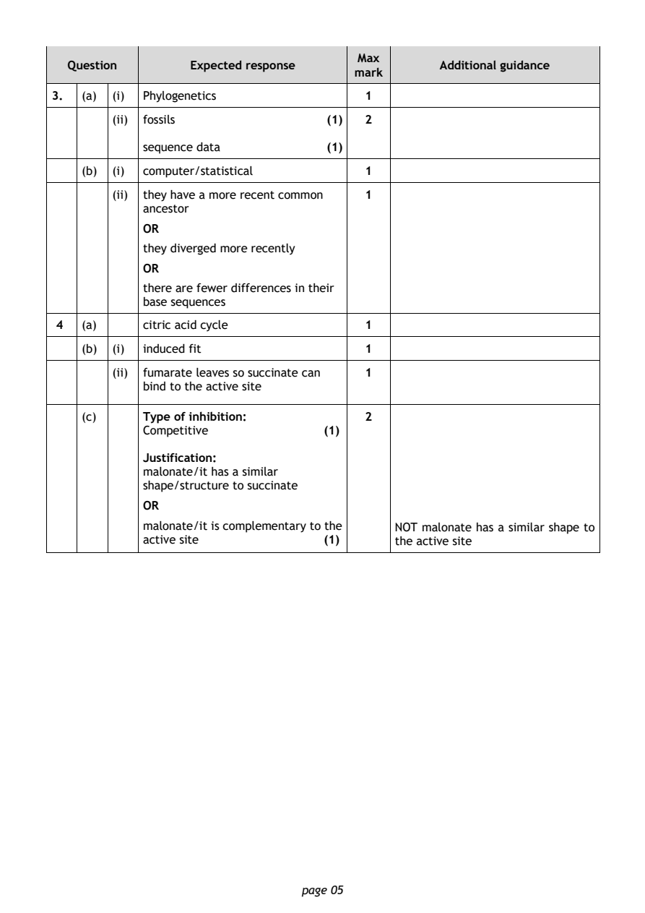
Selectable page text
Max
Question Expected response Additional guidance
mark
3. (a) (i) Phylogenetics 1
(ii) fossils (1) 2
sequence data (1)
(b) (i) computer/statistical 1
(ii) they have a more recent common 1
ancestor
OR
they diverged more recently
OR
there are fewer differences in their
base sequences
4 (a) citric acid cycle 1
(b) (i) induced fit 1
(ii) fumarate leaves so succinate can 1
bind to the active site
(c) Type of inhibition: 2
Competitive (1)
Justification:
malonate/it has a similar
shape/structure to succinate
OR
malonate/it is complementary to the NOT malonate has a similar shape to
active site (1) the active site
page 05PDF page 6
Paper 2, Question 5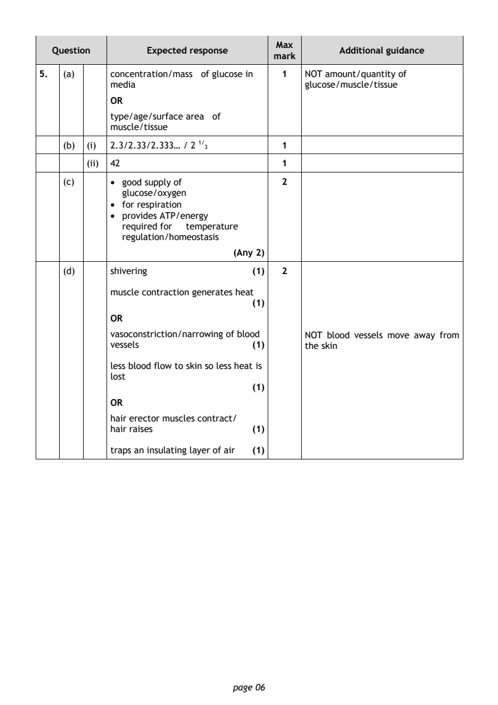
Selectable page text
Max
Question Expected response Additional guidance
mark
5. (a) concentration/mass of glucose in 1 NOT amount/quantity of
media glucose/muscle/tissue
OR
type/age/surface area of
muscle/tissue
(b) (i) 2.3/2.33/2.333… / 2 ¹^{/} 1
3
(ii) 42 1
(c) • good supply of 2
glucose/oxygen
• for respiration
• provides ATP/energy
required for temperature
regulation/homeostasis
(Any 2)
(d) shivering (1) 2
muscle contraction generates heat
(1)
OR
vasoconstriction/narrowing of blood NOT blood vessels move away from
vessels (1) the skin
less blood flow to skin so less heat is
lost
(1)
OR
hair erector muscles contract/
hair raises (1)
traps an insulating layer of air (1)
page 06PDF page 7
Paper 2, Question 6Paper 2, Question 7Paper 2, Question 8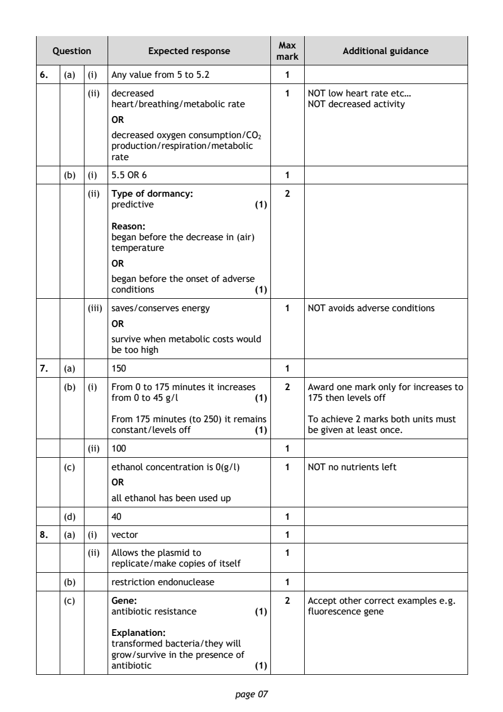
Selectable page text
Max
Question Expected response Additional guidance
mark
6. (a) (i) Any value from 5 to 5.2 1
(ii) decreased 1 NOT low heart rate etc…
heart/breathing/metabolic rate NOT decreased activity
OR
decreased oxygen consumption/CO
production/respiration/metabolic ²
rate
(b) (i) 5.5 OR 6 1
(ii) Type of dormancy: 2
predictive (1)
Reason:
began before the decrease in (air)
temperature
OR
began before the onset of adverse
conditions (1)
(iii) saves/conserves energy 1 NOT avoids adverse conditions
OR
survive when metabolic costs would
be too high
7. (a) 150 1
(b) (i) From 0 to 175 minutes it increases 2 Award one mark only for increases to
from 0 to 45 g/l (1) 175 then levels off
From 175 minutes (to 250) it remains To achieve 2 marks both units must
constant/levels off (1) be given at least once.
(ii) 100 1
(c) ethanol concentration is 0(g/l) 1 NOT no nutrients left
OR
all ethanol has been used up
(d) 40 1
8. (a) (i) vector 1
(ii) Allows the plasmid to 1
replicate/make copies of itself
(b) restriction endonuclease 1
(c) Gene: 2 Accept other correct examples e.g.
antibiotic resistance (1) fluorescence gene
Explanation:
transformed bacteria/they will
grow/survive in the presence of
antibiotic (1)
page 07PDF page 8
Paper 2, Question 9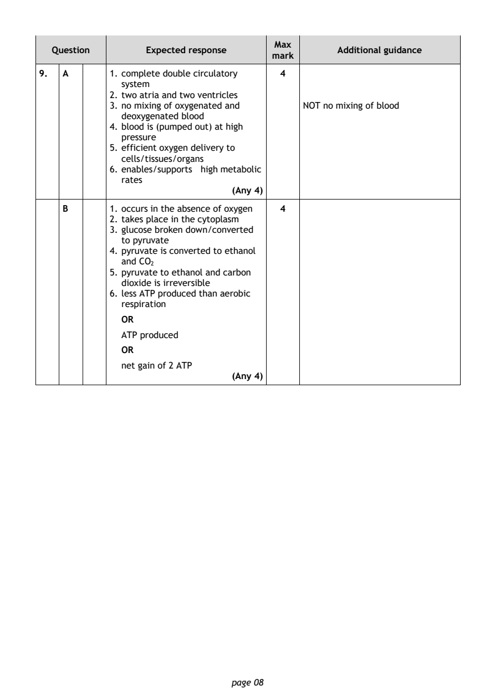
Selectable page text
Max
Question Expected response Additional guidance
mark
9. A 1. complete double circulatory 4
system
2. two atria and two ventricles
3. no mixing of oxygenated and NOT no mixing of blood
deoxygenated blood
4. blood is (pumped out) at high
pressure
5. efficient oxygen delivery to
cells/tissues/organs
6. enables/supports high metabolic
rates
(Any 4)
B 1. occurs in the absence of oxygen 4
2. takes place in the cytoplasm
3. glucose broken down/converted
to pyruvate
4. pyruvate is converted to ethanol
and CO
5. pyruvat²e to ethanol and carbon
dioxide is irreversible
6. less ATP produced than aerobic
respiration
OR
ATP produced
OR
net gain of 2 ATP
(Any 4)
page 08PDF page 9
Paper 2, Question 10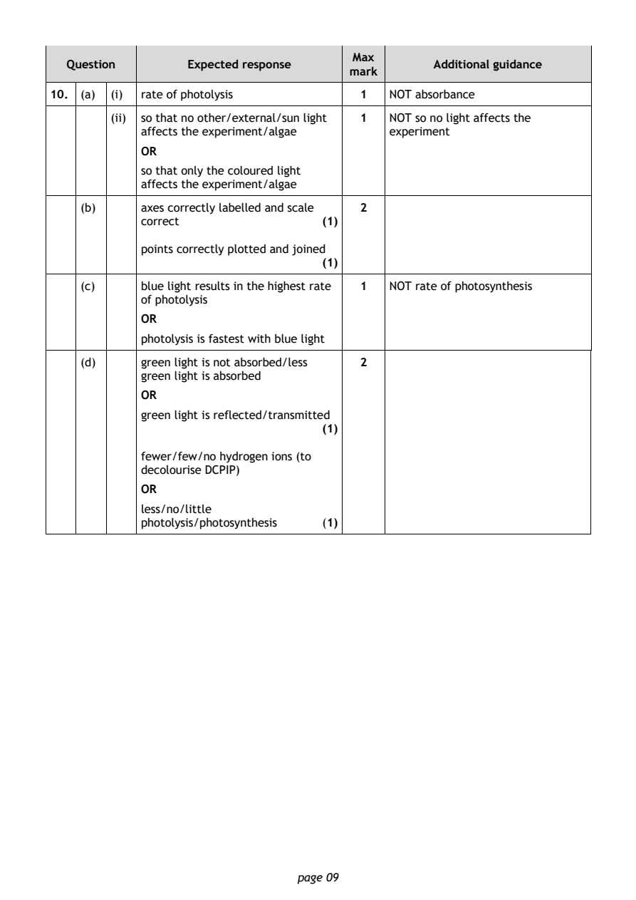
Selectable page text
Max
Question Expected response Additional guidance
mark
10. (a) (i) rate of photolysis 1 NOT absorbance
(ii) so that no other/external/sun light 1 NOT so no light affects the
affects the experiment/algae experiment
OR
so that only the coloured light
affects the experiment/algae
(b) axes correctly labelled and scale 2
correct (1)
points correctly plotted and joined
(1)
(c) blue light results in the highest rate 1 NOT rate of photosynthesis
of photolysis
OR
photolysis is fastest with blue light
(d) green light is not absorbed/less 2
green light is absorbed
OR
green light is reflected/transmitted
(1)
fewer/few/no hydrogen ions (to
decolourise DCPIP)
OR
less/no/little
photolysis/photosynthesis (1)
page 09PDF page 10
Paper 2, Question 11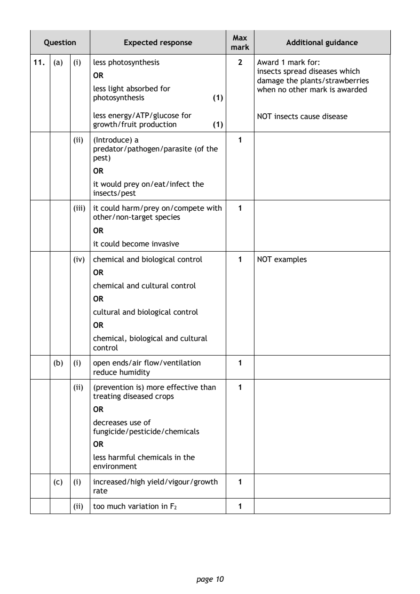
Selectable page text
Max
Question Expected response Additional guidance
mark
11. (a) (i) less photosynthesis 2 Award 1 mark for:
insects spread diseases which
OR
damage the plants/strawberries
less light absorbed for when no other mark is awarded
photosynthesis (1)
less energy/ATP/glucose for NOT insects cause disease
growth/fruit production (1)
(ii) (Introduce) a 1
predator/pathogen/parasite (of the
pest)
OR
it would prey on/eat/infect the
insects/pest
(iii) it could harm/prey on/compete with 1
other/non-target species
OR
it could become invasive
(iv) chemical and biological control 1 NOT examples
OR
chemical and cultural control
OR
cultural and biological control
OR
chemical, biological and cultural
control
(b) (i) open ends/air flow/ventilation 1
reduce humidity
(ii) (prevention is) more effective than 1
treating diseased crops
OR
decreases use of
fungicide/pesticide/chemicals
OR
less harmful chemicals in the
environment
(c) (i) increased/high yield/vigour/growth 1
rate
(ii) too much variation in F 1
2
page 10PDF page 11
Paper 2, Question 12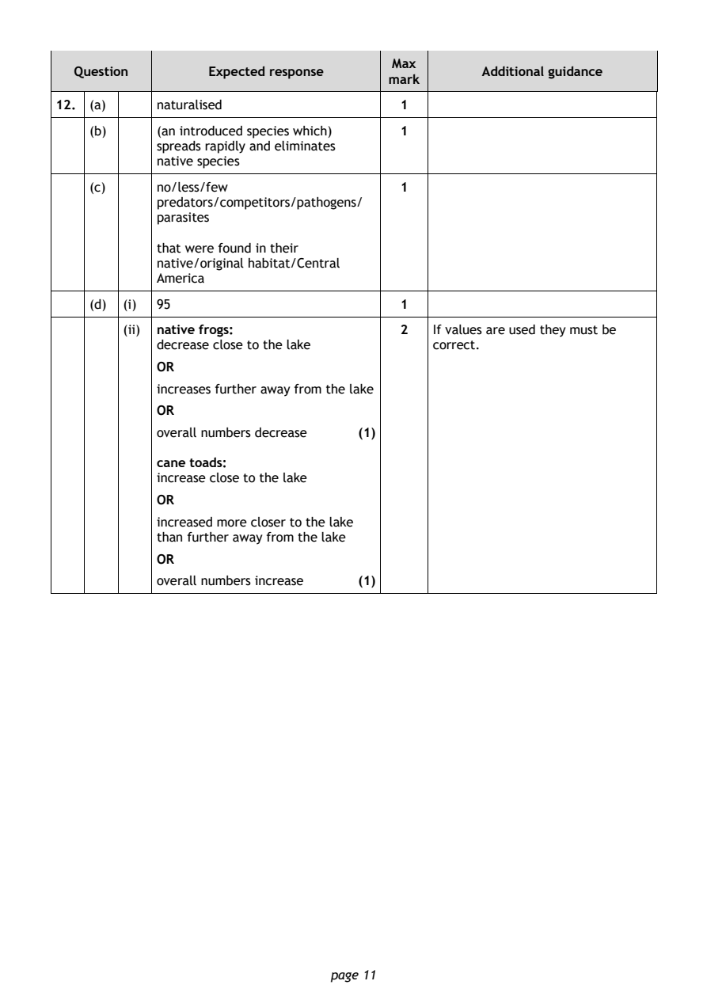
Selectable page text
Max
Question Expected response Additional guidance
mark
12. (a) naturalised 1
(b) (an introduced species which) 1
spreads rapidly and eliminates
native species
(c) no/less/few 1
predators/competitors/pathogens/
parasites
that were found in their
native/original habitat/Central
America
(d) (i) 95 1
(ii) native frogs: 2 If values are used they must be
decrease close to the lake correct.
OR
increases further away from the lake
OR
overall numbers decrease (1)
cane toads:
increase close to the lake
OR
increased more closer to the lake
than further away from the lake
OR
overall numbers increase (1)
page 11PDF page 12
Paper 2, Question 13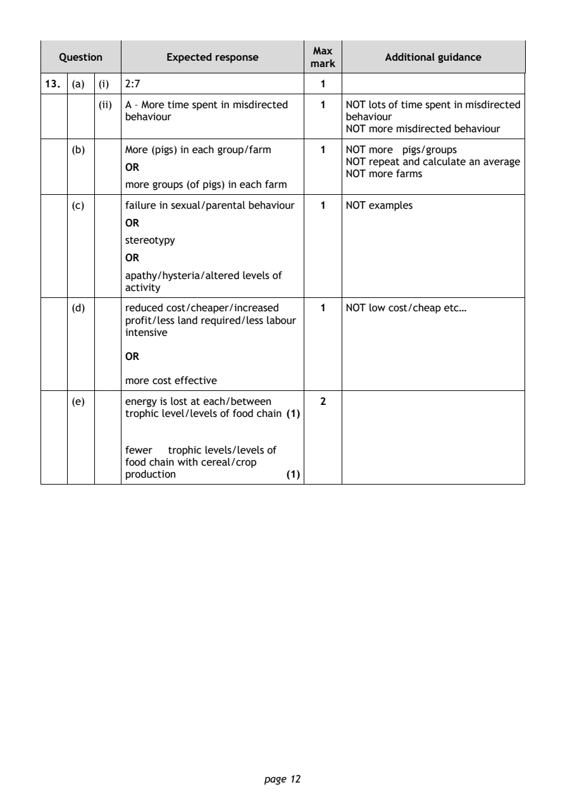
Selectable page text
Max
Question Expected response Additional guidance
mark
13. (a) (i) 2:7 1
(ii) A – More time spent in misdirected 1 NOT lots of time spent in misdirected
behaviour behaviour
NOT more misdirected behaviour
(b) More (pigs) in each group/farm 1 NOT more pigs/groups
NOT repeat and calculate an average
OR
NOT more farms
more groups (of pigs) in each farm
(c) failure in sexual/parental behaviour 1 NOT examples
OR
stereotypy
OR
apathy/hysteria/altered levels of
activity
(d) reduced cost/cheaper/increased 1 NOT low cost/cheap etc…
profit/less land required/less labour
intensive
OR
more cost effective
(e) energy is lost at each/between 2
trophic level/levels of food chain (1)
fewer trophic levels/levels of
food chain with cereal/crop
production (1)
page 12PDF page 13
Paper 2, Question 14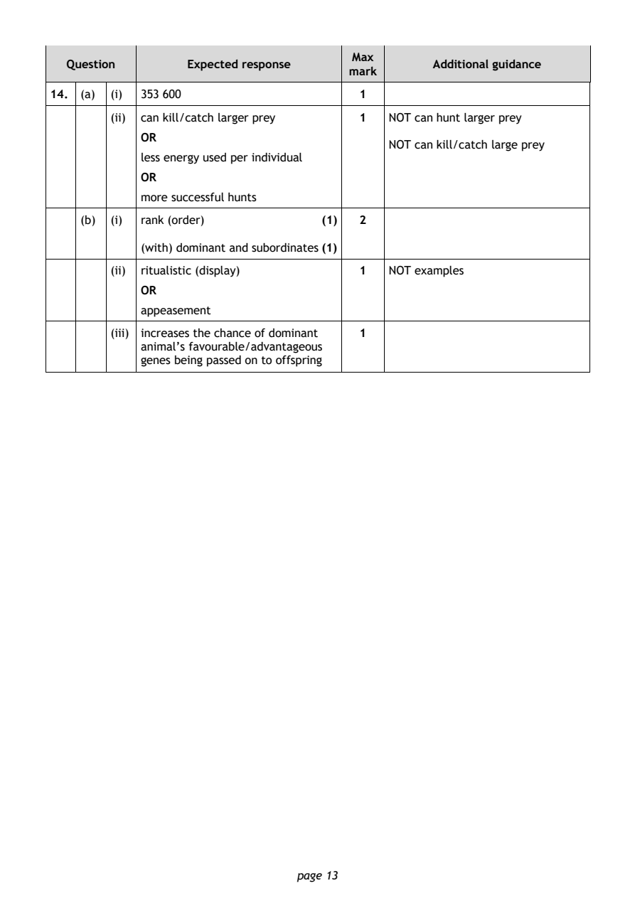
Selectable page text
Max
Question Expected response Additional guidance
mark
14. (a) (i) 353 600 1
(ii) can kill/catch larger prey 1 NOT can hunt larger prey
OR
NOT can kill/catch large prey
less energy used per individual
OR
more successful hunts
(b) (i) rank (order) (1) 2
(with) dominant and subordinates (1)
(ii) ritualistic (display) 1 NOT examples
OR
appeasement
(iii) increases the chance of dominant 1
animal’s favourable/advantageous
genes being passed on to offspring
page 13PDF page 14
Paper 2, Question 15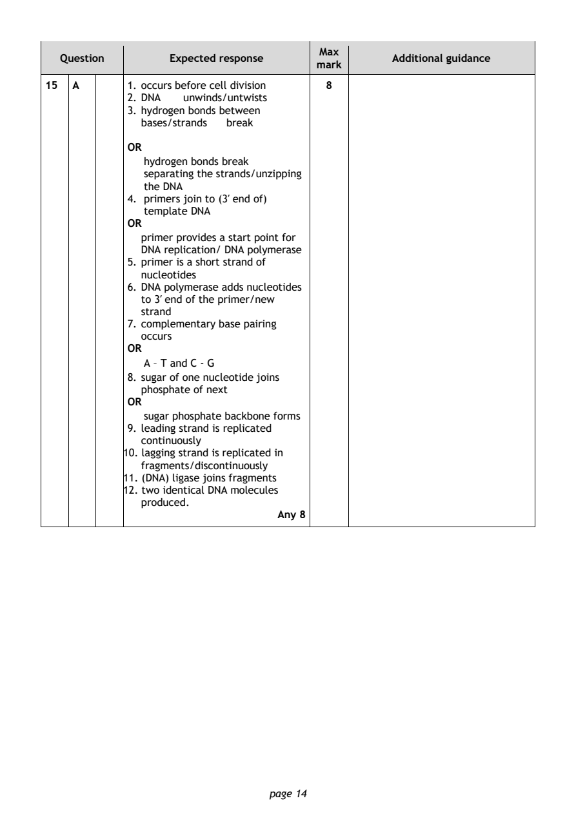
Selectable page text
Max
Question Expected response Additional guidance
mark
15 A 1. occurs before cell division 8
2. DNA unwinds/untwists
3. hydrogen bonds between
bases/strands break
OR
hydrogen bonds break
separating the strands/unzipping
the DNA
4. primers join to (3′ end of)
template DNA
OR
primer provides a start point for
DNA replication/ DNA polymerase
5. primer is a short strand of
nucleotides
6. DNA polymerase adds nucleotides
to 3′ end of the primer/new
strand
7. complementary base pairing
occurs
OR
A – T and C - G
8. sugar of one nucleotide joins
phosphate of next
OR
sugar phosphate backbone forms
9. leading strand is replicated
continuously
10. lagging strand is replicated in
fragments/discontinuously
11. (DNA) ligase joins fragments
12. two identical DNA molecules
produced.
Any 8
page 14PDF page 15
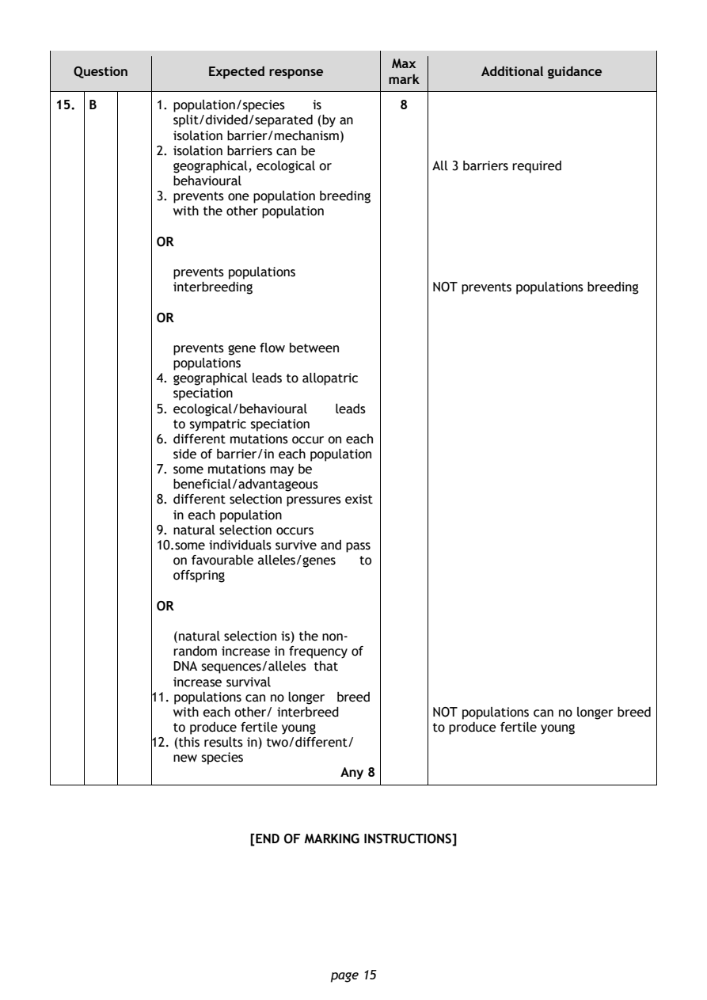
Selectable page text
Max
Question Expected response Additional guidance
mark
15. B 1. population/species is 8
split/divided/separated (by an
isolation barrier/mechanism)
2. isolation barriers can be
geographical, ecological or All 3 barriers required
behavioural
3. prevents one population breeding
with the other population
OR
prevents populations
interbreeding NOT prevents populations breeding
OR
prevents gene flow between
populations
4. geographical leads to allopatric
speciation
5. ecological/behavioural leads
to sympatric speciation
6. different mutations occur on each
side of barrier/in each population
7. some mutations may be
beneficial/advantageous
8. different selection pressures exist
in each population
9. natural selection occurs
10.some individuals survive and pass
on favourable alleles/genes to
offspring
OR
(natural selection is) the non-
random increase in frequency of
DNA sequences/alleles that
increase survival
11. populations can no longer breed
with each other/ interbreed NOT populations can no longer breed
to produce fertile young to produce fertile young
12. (this results in) two/different/
new species
Any 8
[END OF MARKING INSTRUCTIONS]
page 15